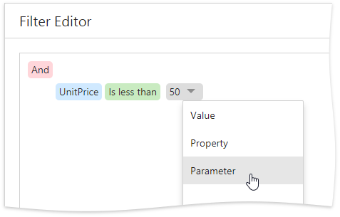
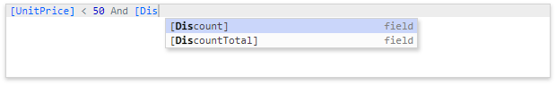

Filter Editor
This document describes the Filter Editor available in the End-User Report Designer.
Filter Editor Overview
The Filter Editor provides a visual interface for constructing filter criteria of varying complexity with an unlimited number of filter conditions combined by logical operators.

A filter condition consists of three parts:
- A field of a data source to which a report is bound.
- Criteria operator, such as Equals, Is less than, Is between, etc.
- A static operand value, another data field or a report parameter.
You can arrange specific conditions into groups with And, Or, No And , and Not Or operators.
Invoke the Filter Editor
You can invoke the Filter Editor in one of the following ways:
In the Properties panel, click the ellipsis button for the report's Filter String property to filter data at the report level.

In the Query Builder, click the ellipsis button for the Filter or Group Filter property to filter data at the data source level.

Tree-Like Filtering
The Filter Editor displays filter criteria as a tree where individual nodes specify simple filter conditions. The root node is the logical operator combining all the conditions.
Click the plus button next to the operator to add a new condition or group.

You can select the required data field and comparison operator from the corresponding drop-down lists and enter an operand value in the dedicated value box.

Expand the drop-down menu for a value placeholder and select Property or Parameter to compare a data field with another data field or a report parameter. Then, click the converted placeholder and select the required item.

You can change the logical operator by clicking it and selecting the desired type.

Click the filter condition's  button to delete it.
button to delete it.
Text-Based Filtering
In the advanced mode, the Filter Editor allows you to type a filter string manually.

Refer to the Expression Language topic for the list of available operators and functions and for details on their usage.
This editor supports intelligent code completion (suggesting functions and available data columns as you type).

The  icon appears if a condition contains any errors.
icon appears if a condition contains any errors.